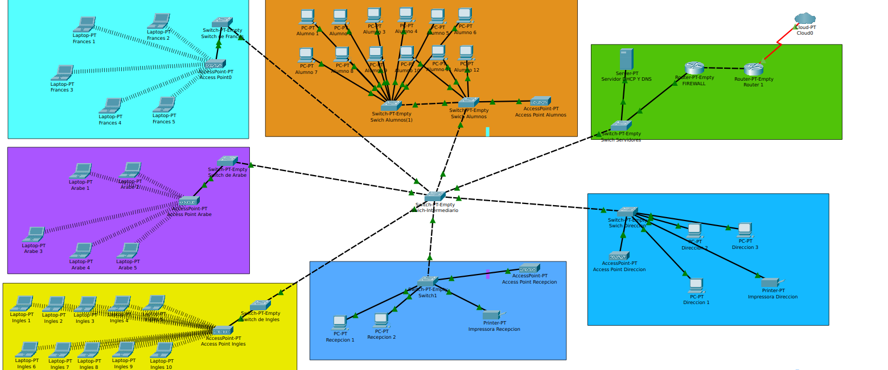

Projecte 2: Disseny de Xarxa Segura i Òptima per a PIME
Descripció General i Objectius
Aquest projecte se centra en el disseny, la segmentació i la implementació física i lògica d'una xarxa per a una Petita i Mitjana Empresa (PIME) amb 50 usuaris. L'objectiu principal era assegurar una comunicació eficient i aplicar protocols de seguretat a nivell de capa 2 i 3.
Punts Clau d'Implementació
- **Segmentació amb VLANs:** Creació i configuració de VLANs en els *switches* per aïllar el trànsit dels departaments (Administració, Tècnic, Vendes, Servidors), millorant la seguretat i l'eficiència.
- **Routing Inter-VLAN:** Implementació de *Routing* Inter-VLAN per permetre la comunicació controlada entre els departaments, aplicant protocols estàtics i dinàmics (OSPF).
- **Seguretat amb ACLs:** Configuració de regles **ACL (Access Control Lists)** al *router* per restringir l'accés crític (p. ex., de Vendes a Administració) i bloquejar l'accés extern a ports sensibles.
- **Adreçament (Subnetting):** Disseny i càlcul de les subxarxes mitjançant **VLSM** (Variable Length Subnet Masking) per optimitzar l'ús de les adreces IP disponibles i planificar l'escalabilitat.